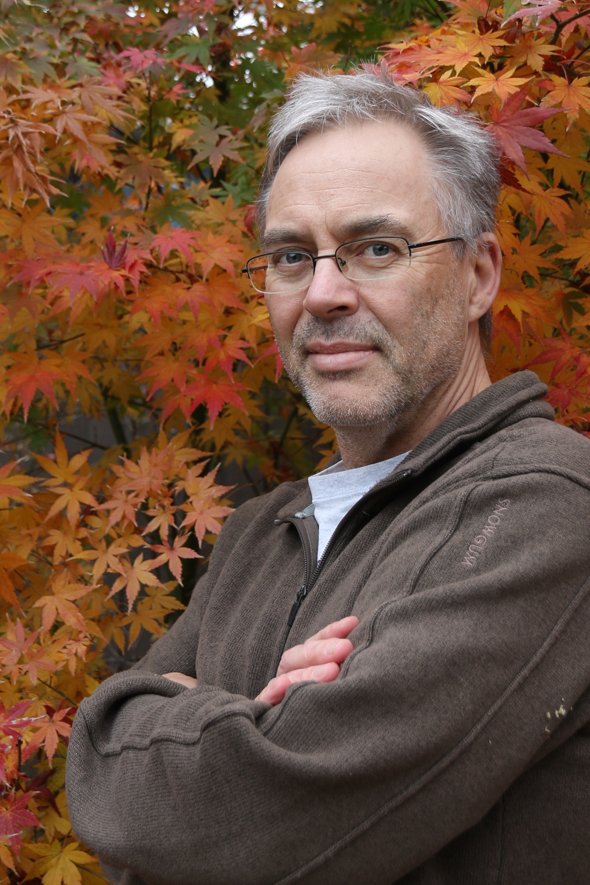

Keynote Speakers
Alistair Moffat
University of Melbourne

Short Biographical Sketch
Alistair Moffat has been involved in research in text compression
and information retrieval for more than three decades, and has
published numerous papers in the areas of index compression, text
compression, and dynamic pruning mechanisms, all of which help
support efficient ranked querying. Alistair is a co-author of the
1991 (revised 1994) book Managing Gigabytes, and also co-author of
the 2002 book Compression and Coding Algorithms. Much of Alistair's
recent work has examined the issue of IR system evaluation, and,
with other co-authors in Australia, he has focused on the relationship
between models of user interactions with search results pages, and
the effectiveness metrics that those interactions correspond to.
Alistair was co-Chair for SIGIR 1998 in Melbourne, and for CIKM
2015, also held in Melbourne; and co-Program Committee Chair for
SIGIR 2005 (Salvador, Brazil) and SIGIR 2015 (Santiago, Chile).
WSDM, to be held in Melbourne in February 2019, is Alistair's next
conference project.
Alistair has been a teaching/research faculty member at the University of Melbourne for thirty years, and was Department Chair from 2007-2011. During that time he has taught programming skills to well in excess of 15,000 undergraduate students, has authored a C programming textbook (Programming, Problem Solving, and Abstraction with C, 2002, revised 2012), and has received awards for his teaching and lecturing skills.
Alistair's PhD was completed in 1985, at the University of Canterbury, in New Zealand, in the area of shortest path algorithms.
Hannan Samet
University of Maryland
Short Biographical Sketch
Hanan Samet is a Distinguished University Professor of Computer Science at the
University of Maryland, College Park. He received the B.S. degree in
engineering from UCLA, and the M.S. Degree in operations research and
the M.S. and Ph.D. degrees in computer science from Stanford
University. His doctoral dissertation dealt with proving the
correctness of translations of LISP programs which was the first work
in translation validation and the related concept of proof-carrying code.
He is the author of the recent book "Foundations of Multidimensional and Metric Data Structures" published by Morgan-Kaufmann, an imprint of Elsevier, in 2006, an award winner in the 2006 best book in Computer and Information Science competition of the Professional and Scholarly Publishers (PSP) Group of the American Publishers Association (AAP), and of the first two books on spatial data structures "Design and Analysis of Spatial Data Structures", and Applications of Spatial Data Structures: Computer Graphics, Image Processing, and GIS", both published by Addison-Wesley in 1990.
He is the Founding Editor-In-Chief of the ACM Transactions on Spatial Algorithms and Systems (TSAS), the founding chair of ACM SIGSPATIAL, a recipient of the 2009 UCGIS Research Award, 2011 ACM Paris Kanellakis Theory and Practice Award, the IEEE Computer Society's 2014 Wallace McDowell Award, and a Fellow of the ACM, IEEE, AAAS, IAPR (International Association for Pattern Recognition), and UCGIS. He received best paper awards in the 2007 Computers & Graphics Journal, the 2008 ACM SIGMOD and SIGSPATIAL Conferences, the 2012 SIGSPATIAL MobiGIS Workshop, the 2013 SIGSPATIAL GIR Workshop, as well as best demo paper awards at the 2011 and 2016 ACM SIGSPATIAL Conferences, and one of the best papers in the 2009 IEEE ICDE Conference selected for publication in IEEE TKDE. He was elected to the ACM Council as the Capitol Region Representative for the term 1989-1991, and was an ACM Distinguished Speaker during 2008-2015.
Moshe Y. Vardi
Rice University

Short Biographical Sketch
Moshe Y. Vardi is the George Distinguished Service Professor in Computational Engineering and Director of the Ken Kennedy Institute for Information Technology at Rice University. He is the recipient of three IBM Outstanding Innovation Awards, the ACM SIGACT Goedel Prize, the ACM Kanellakis Award, the ACM SIGMOD Codd Award, the Blaise Pascal Medal, the IEEE Computer Society Goode Award, the EATCS Distinguished Achievements Award, and the Southeastern Universities Research Association's Distinguished Scientist Award. He is the author and co-author of over 500 papers, as well as two books: Reasoning about Knowledge and Finite Model Theory and Its Applications. He is a Fellow of the Association for Computing Machinery, the American Association for Artificial Intelligence, the American Association for the Advancement of Science, the European Association for Theoretical Computer Science, the Institute for Electrical and Electronic Engineers, and the Society for Industrial and Applied Mathematics. He is a member of the US National Academy of Engineering and National Academy of Science, the American Academy of Arts and Science, the European Academy of Science, and Academia Europaea. He holds honorary doctorates from the Saarland University in Germany, Orleans University in France, UFRGS in Brazil, and the University of Liege in Belgium. He is currently a Senior Editor of of the Communications of the ACM, after having served for a decade as Editor-in-Chief.
TITLE:
Humans, Machines, and Work: The Future is Now
ABSTRACT:
Automation, driven by technological progress, has been increasing
inexorably for the past several decades. Two schools of economic
thinking have for many years been engaged in a debate about the
potential effects of automation on jobs: will new technology spawn mass unemployment, as the robots take jobs away from humans? Or will the jobs robots take over create demand for new human jobs?
I will present data that demonstrate that the concerns about automation are valid. In fact, technology has been hurting working Americans for the past 40 years. The discussion about humans, machines and work tends to be a discussion about some undetermined point in the far future. But it is time to face reality. The future is now.
Of particular interest to computer scientists is the question of computer science jobs. I will describe some recent progress in artificial intelligence towards the automation of programming.